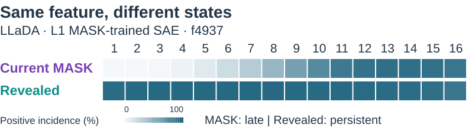

COLM 2026 · NonAR-LM Workshop
Feature Evolution in
Diffusion Language Models
Purdue University · UC San Diego · Rensselaer Polytechnic Institute
Explore how sparse autoencoder features change across denoising in Dream and LLaDA.

Explore the temporal atlas
- Choose a model
Switch between Dream and LLaDA.
- Move through time
Move the 16-bin slider. Feature positions remain fixed; activity changes.
- Inspect a feature
Hover or tap a point for a short candidate description.